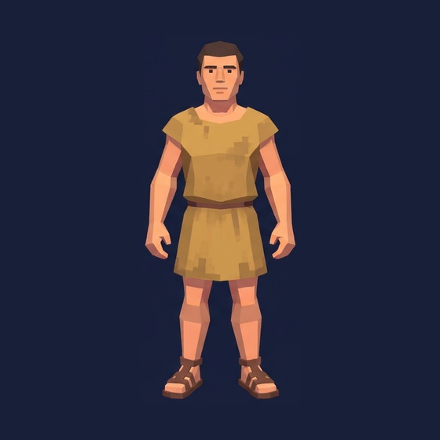
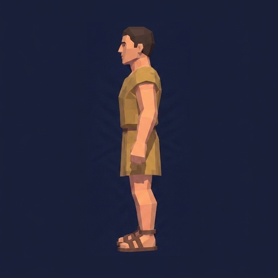
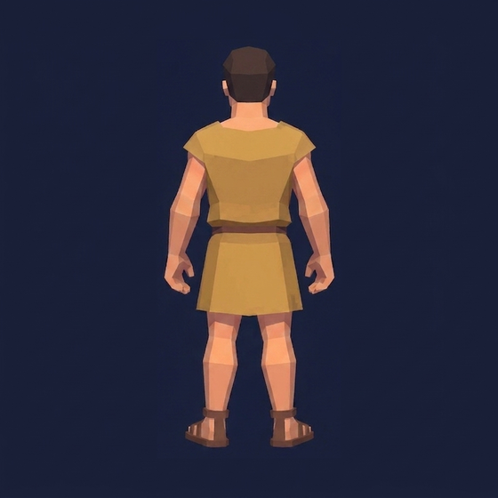

The cast — crew and rams, photo-rigged into the Living Book
Two builds, four speaking parts. The crew pair is ONE photo-rig off the sealed
crew canonical — the ochre man reconstructed
(model_tripo-p1-multiview-to-3d) and rigged with the banked biped walk
(model_tripo-rigging-v1); the slate elder is a deterministic
material-palette swap on the very same rig, no second build. The rams are ONE quadruped
photo-rig off the great-ram canonical — Tripo Rigging 2.5's
rigType:quadruped preset with the banked
quadruped:walk — the great ram at his authored anomaly scale, the
flock the same rig set down at the painted ewes' stock height. All of them walk the cave's
audited corridor in one procession, every position a pure function of sim-time.
the procession — ochre man, slate elder, the great ram, then the flock, in at the mouth and out along the downstage floorone shared pace — spacing can never close
The registry is the law. Everything on this stage is read from
cast.json: which GLB, which clips, the honest ledger scale per set
(the cave's 43 px/m — crew at 73 px, the great ram 105 px long, flock at the
ewes' 24 px stock height), and the tint recipes for the palette-swap variants. The walk
corridor is the demo3d path already audited against every ledger obstacle box (fire ring
clearance ≥ 10 px); one shared speed means the procession's spacing is invariant —
no actor can ever walk through another, or through a box.
the crew build — one rig, two men

front · 0° — cropped from the sealed canonical

left · 90° — front as reference

back · 180° — front as reference
the ram build — one rig, the great one and the flock